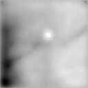
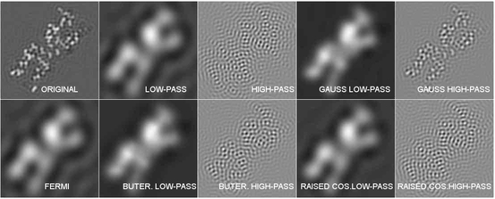
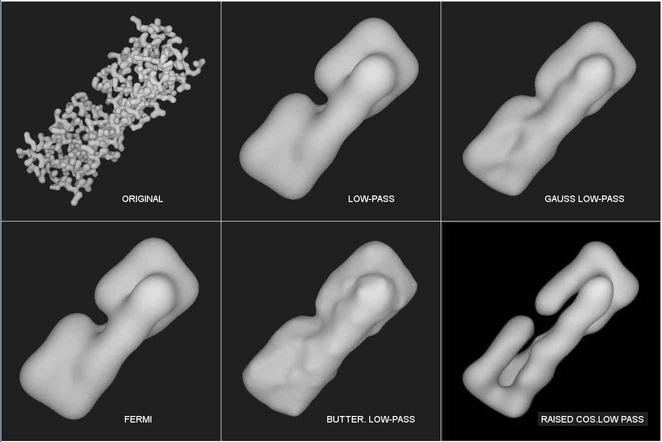

| .OPERATION: | FQ | ; Quick Fourier filter |
| .INPUT FILE: | sav_pp | ; Image (input) |
| .OUTPUT FILE: | fq | ; Image (output) |
| .FILTER TYPE (1-10): | 1 | ; Low pass filter |
| .FILTER RADIUS (IN FREQUENCY OR PIXEL UNITS): | 10 | ; Radius in pixels |
| INPUT IMAGE | LOW PASS OUTPUT IMAGE |
|---|---|
| |  |
| sav_pp | fq |
| LOW-PASS | Radius (Freq.): | 0.09 | ||
| HIGH-PASS | Radius (Freq.): | 0.45 | ||
| GAUSSIAN LOW-PASS | Radius (Freq.): | 0.06 | ||
| GAUSSIAN HIGH-PASS | Radius (Freq.): | 0.45 | ||
| FERMI | Radius (Freq.): | 0.09 | ||
| BUTTERWORTH LOW-PASS | Lower Freq.: | 0.06 | Upper Freq.: | 0.12 |
| BUTTERWORTH HIGH-PASS | Lower Freq.: | 0.4 | Upper Freq.: | 0.5 |
| RAISED COSINE LOW-PASS | Lower Freq.: | 0.06 | Upper Freq.: | 0.12 |
| RAISED COSINE HIGH-PASS | Lower Freq.: | 0.4 | Upper Freq.: | 0.5 |
|  |
|  |